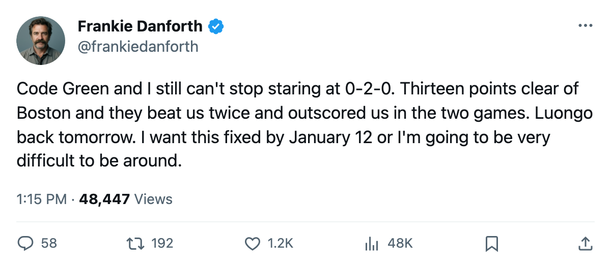
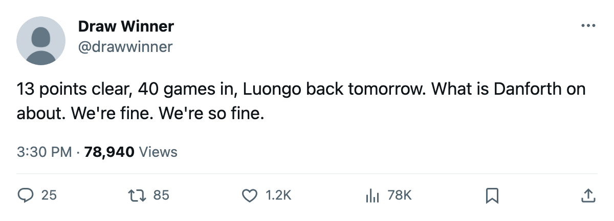

DANFORTH: Code Green, Luongo skates tomorrow, and Boston holds the only edge that matters
13 points clear, 40 games in, and the one number nobody in the building talks about is 0-2-0
 Frankie DanforthColumnist · Queen City Telegram
Frankie DanforthColumnist · Queen City Telegram
Code Green

Code Green. I'm writing that and I hate how easy it feels. 63 points in 40 games, 13 clear of  Boston Bruins, the 99 in the middle of everything,
Boston Bruins, the 99 in the middle of everything,  Marian Gaborik99 at a 99 overall that the Bureau's Development Index has riding +11 above its base. The Panic Meter is asleep and I cannot find a reason to wake it up.
Marian Gaborik99 at a 99 overall that the Bureau's Development Index has riding +11 above its base. The Panic Meter is asleep and I cannot find a reason to wake it up.
Except Boston.
Boston Bruins leads the season series 2-0-0. Four goals for, six against. That's the whole argument, and it's not a small one. When the standings tie in March, when the conference seeding hangs on a single game in April, the head-to-head is the thing you cannot trade away at the deadline.
 Roberto Luongo95 returns 2006-01-06. Boston Bruins arrives at the ACC on 2006-01-07. The man who won the Richard and the Jennings last season has 22 starts this one and a $1.60M contract with 1 year left. He sits behind a defence that has allowed 83 goals in 40 games, which is the kind of number that makes a goaltender look like the best player on every scoresheet in the league.
Roberto Luongo95 returns 2006-01-06. Boston Bruins arrives at the ACC on 2006-01-07. The man who won the Richard and the Jennings last season has 22 starts this one and a $1.60M contract with 1 year left. He sits behind a defence that has allowed 83 goals in 40 games, which is the kind of number that makes a goaltender look like the best player on every scoresheet in the league.
 Toronto Maple Leafs's division record is 3 wins, 2 overtime wins, 3 regulation losses, 0 overtime losses across 8 games. Boston Bruins's is 7 wins, 2 overtime wins, 1 regulation loss, 1 overtime loss across 11 games. Toronto has 12 division games left. Boston has 9. The arithmetic favors Toronto for the crown, which everyone already knew by Thanksgiving, but the head-to-head favors Boston right now, and Friday night is the first chance to change that.
Toronto Maple Leafs's division record is 3 wins, 2 overtime wins, 3 regulation losses, 0 overtime losses across 8 games. Boston Bruins's is 7 wins, 2 overtime wins, 1 regulation loss, 1 overtime loss across 11 games. Toronto has 12 division games left. Boston has 9. The arithmetic favors Toronto for the crown, which everyone already knew by Thanksgiving, but the head-to-head favors Boston right now, and Friday night is the first chance to change that.
I spent October calling the fourth line a tax and December calling a teenager the second-centre solution. Petr Chlup87 is 31 points in 40 games at 20.7 minutes a night, 19 years old, and he hasn't let go.  Mats Sundin92 is 31 points in 40 at 23.4 minutes. That's the top two centres in the division wearing the same sweater. I have nothing left to gripe about there.
Mats Sundin92 is 31 points in 40 at 23.4 minutes. That's the top two centres in the division wearing the same sweater. I have nothing left to gripe about there.
What I have is 12 division games, 2 against Boston before the end of January, and a season series I'm down 0-2-0 in. Boston is 15-4 on the road and arrives with nothing to lose and a record against this team that says they already know how to play the game. Luongo returns into that, with 22 starts behind him and the crease his to own or hand away.
Code Green means I'm calm. It doesn't mean I'm done.

